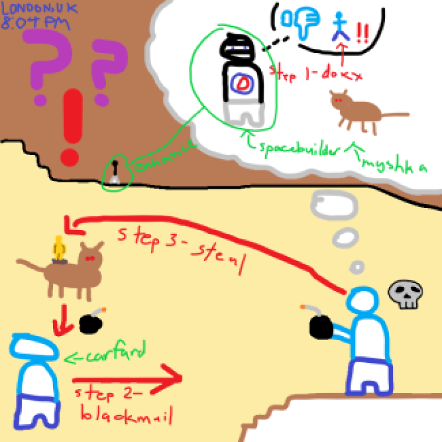
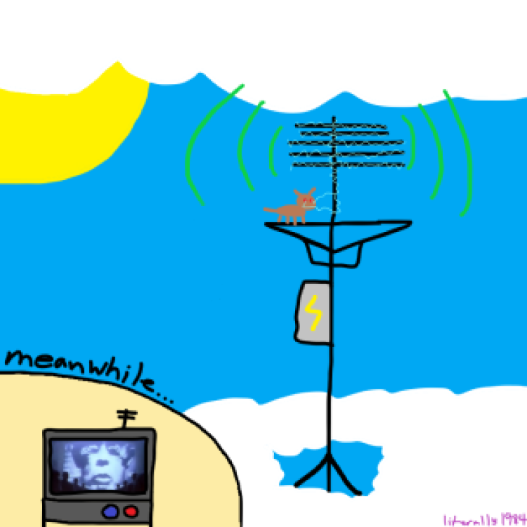
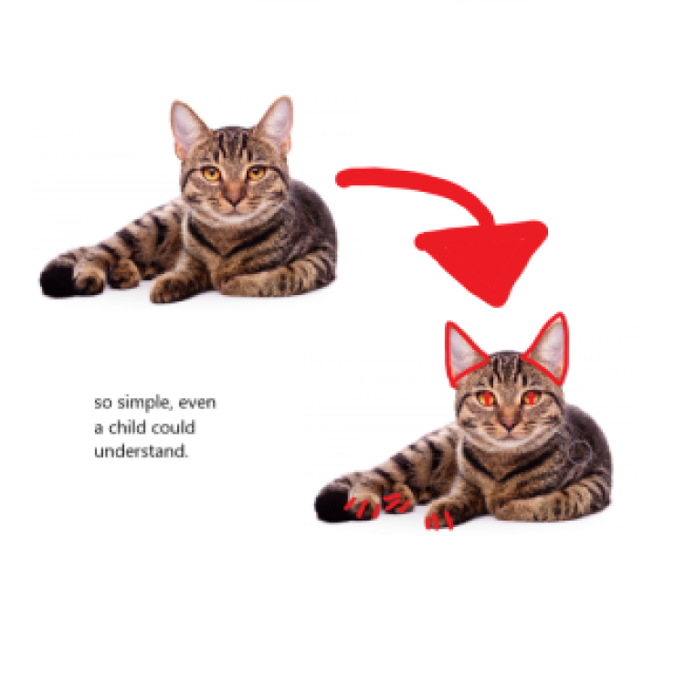

- Home
- The Truth
- Contact Me
Educating on the truth. Exposing Myshka and her lies.
I made this website to expose Myshka, the cat of the CEO of Mooshimity, and the lies she continues to feed to the Brick Hillian public.
Everything she claims is FAKE, and Spacebuilder, may be in on the scandal.
Carfard was a puppet used by Myshka to commit her devilish acts on that fateful day.
#RIPcarfard #DontTrustMyshka #MyshkaIsEvil

PART I: Anatomy of the Attack

PART II: Myshka's Subliminal Messaging

PART III: Reason of the Attack